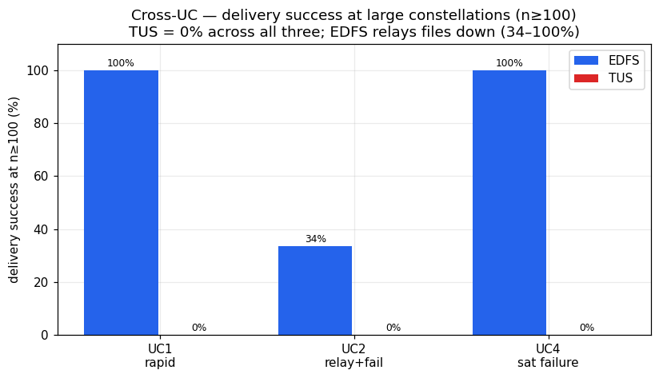
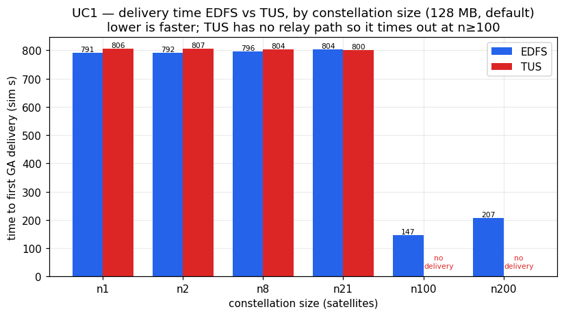
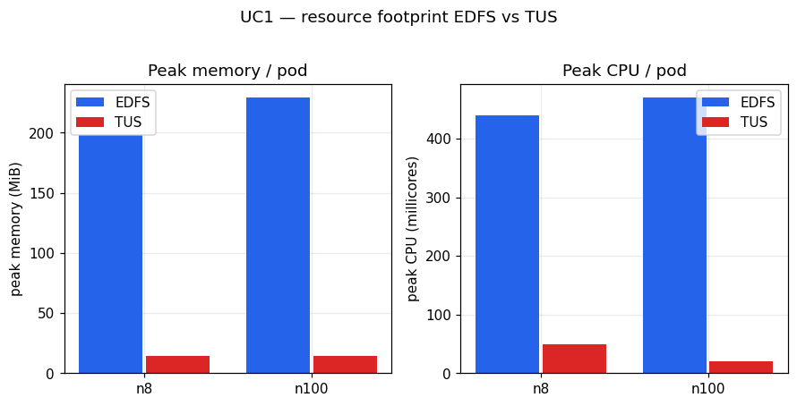
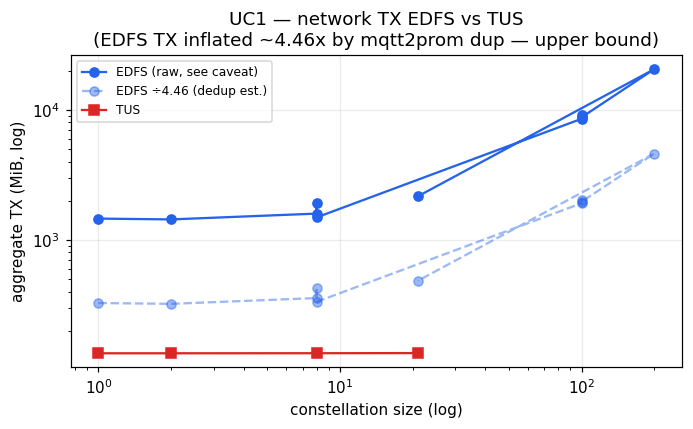
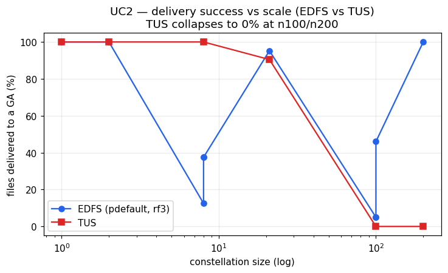
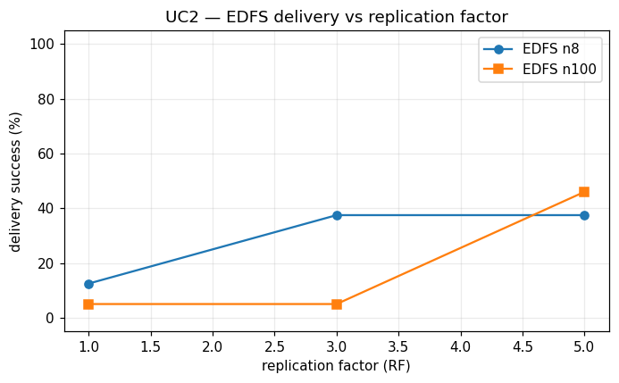
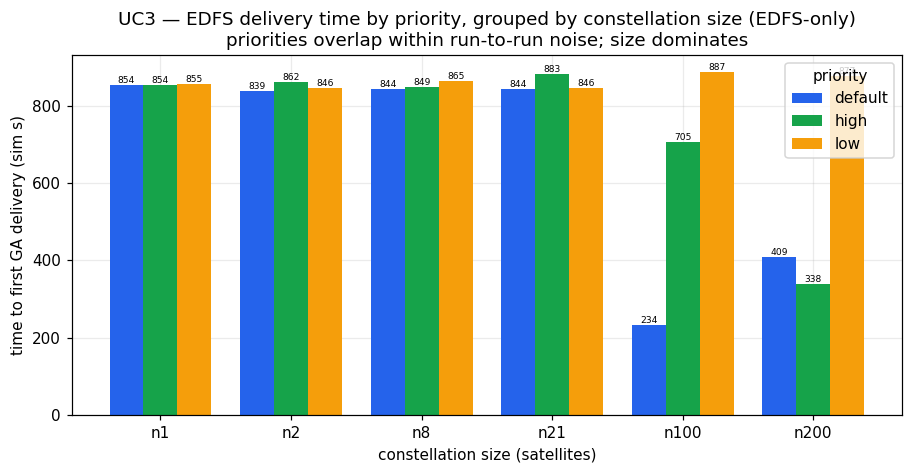
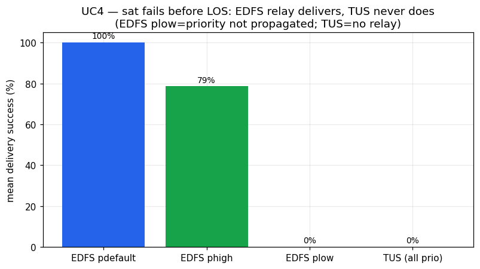
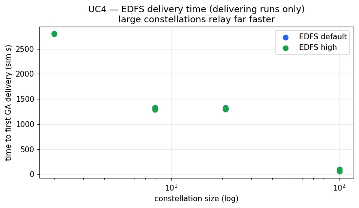
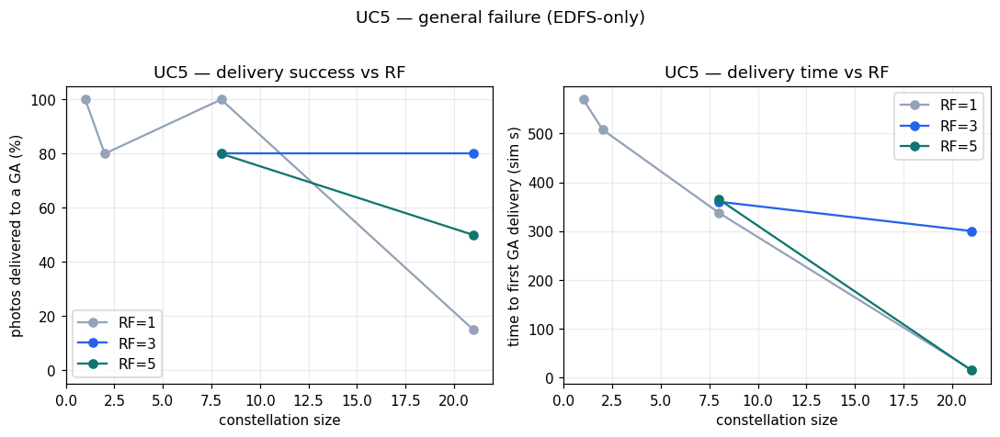

File delivery from LEO satellite constellations to ground stations: latency, fault resilience, priority-aware routing, bandwidth/memory overhead, and Bitswap behaviour under intermittent connectivity. Empirical findings from the YASS UC1–UC5 sweeps, with an external-literature annex.
Across five use cases (UC1–UC5) the YASS satellite simulator compared EDFS (an IPFS/bitswap-based distributed store) against TUS (a resumable point-to-point upload modelling the current operational downlink standard) for delivering satellite imagery to ground assets (GA). The campaign establishes a single, consistent picture: EDFS buys resilience and favourable scaling — it relays content through surviving peers, survives producer failure, and delivers faster as the constellation grows — at a clear and quantifiable resource cost of roughly an order of magnitude more memory (~180–260 MiB vs ~13–15 MiB) plus much higher CPU and network transmit. TUS is functionally equivalent to EDFS only in the small, fault-free, direct-downlink regime, where it is dramatically lighter; it has no inter-satellite relay and therefore loses any file whose producer fails (UC4: 0/15 delivered) and produced 0% delivery at the largest rosters (n≥100) in UC1/UC2/UC4. The headline trade-off is robust, density-favouring delivery (EDFS) versus a minimal footprint with a single point of failure (TUS).
| UC | scenario | EDFS result | TUS result | who wins | key caveat |
|---|---|---|---|---|---|
| UC1 | Rapid Disaster Response — single photo to first GA, no faults | 100% delivery at every n/RF; latency ~790 s at small n, drops to 122–207 s at n=100–200 | 100% at n≤21 (~800 s, tied with EDFS); TimedOut at n=100/200 (0%) | EDFS at scale, tie at small n | TUS large-n failure confounded by shared-cluster infra pressure; priority unobservable |
| UC2 | Continuous LOS Relay — every sat one file, large-scale faults | 100% at n=1,2 and n=200 (RF=3); intermediate completeness partial & RF-dependent (n=100: 5%→46% as RF 3→5); first GA as fast as 9.6 s | 100% only at n≤8; 90% at n=21; 0% at n=100/200 (TimedOut) | EDFS (resilience), with completeness caveats | TUS large-n failure confounded by infra; many EDFS resource rows are extraction gaps; some low/edge runs non-terminating |
| UC3 | Situation-Aware Routing — single large file, no faults | 100% delivery in all 18 variants; latency ~850 s at n≤21 → 234 s (n100) / 338 s (n200) | n/a (EDFS-only by design) | EDFS (no baseline) | priority unobservable; TX upper-bound only; partial GA-count rows at n200 |
| UC4 | Sat Failure over the pole — producer Destroyed before LOS | Delivers (100%) in the large majority of viable runs (n≥2, high/default); n100 first GA ~60 s; one anomaly phigh-td45m-n02 (probable export gap) |
0 deliveries — all 15 variants TimedOut (0%) | EDFS decisively | n01 (no peer) and plow non-delivery are by-design, not defects; 2 plow runs still Ongoing; priority unobservable |
| UC5 | General Failure — finite photo set, large-scale non-Destroy faults | All variants Success, every variant delivers ≥1 photo; first GA 14.3–569.6 s; full-set completeness partial (only n01 & n08 RF=1 reach 100%; n21 RF=1 = 15%) | n/a (EDFS-only by design) | EDFS (no baseline) | completeness RF-gated and noisy (n21: 15%→80%→50% as RF 1→3→5); small sample; priority unobservable |
The clearest, most decision-relevant result of the campaign is resilience under producer failure (UC4): when a satellite captures a high-priority photo far over the pole and is then completely destroyed before reaching any ground station, EDFS relays the photo around the dead producer through another satellite's content-addressed replica and delivers it (100% in the large majority of viable n≥2 configurations), while TUS — having no inter-satellite relay — delivers 0 out of 15 variants (every TUS run TimedOut at 0%). This is the property TUS structurally cannot provide.
The second headline is behaviour at scale: at large rosters (n≥100) TUS reaches 0% delivery in UC1, UC2 and UC4, whereas EDFS continues to deliver — from 34% up to 100% depending on use case and replication — and, counter-intuitively, EDFS delivers fastest at the largest constellations (e.g. UC1 122 s at n=100, UC2 first GA 9.6 s, UC3 234 s at n=100, UC4 ~60 s at n=100), because a denser constellation provides more relay candidates that contact a ground station sooner. (The TUS large-n=100/200 failures are partly confounded by shared-cluster infrastructure pressure — see limitations.)

EDFS pays a consistent, quantifiable premium for content-addressing and bitswap relay, observed across all five use cases:
In short: EDFS trades roughly an order of magnitude more RAM, several-fold more CPU, and far more network traffic for resilience and scaling that TUS cannot match.
These caveats bound every quantitative claim above and must accompany the deliverable:
a. TX inflation (~4.46×). All EDFS tx_MiB values are inflated by a mqtt2prom exporter-pod duplication and are reported as an upper bound; treat EDFS-vs-TUS bandwidth qualitatively only. TUS TX is unaffected.
b. RX missing. Network receive is unrecoverable (the world-controller ingress reads 0 on receivers); no RX metric is reported anywhere in the campaign.
c. Metric-extraction gaps. Many variants report peak_mem_MiB=0, peak_cpu=0 and/or mean_gs/n_gs=0 under large rosters / Prometheus pressure. These are extraction gaps, not genuine zero usage, and are excluded from resource and mean-latency statistics. (UC4's phigh-td45m-n02 0-delivery row, with all-zero metrics, is treated as a probable export gap, not a relay failure.) Delivery (first_gs) derived from GA-receipt events remains valid on such rows.
d. Priority unobservable. Across UC1–UC5, EDFS replicas are universally self-pinned and contention is negligible, so the priority axis (high/default/low) cannot be resolved; any apparent priority ordering is weak and noisy. No quantified priority-routing claim is made — UC3's situation-aware-routing objective in particular remains unproven and needs a dedicated contention experiment.
e. TUS at scale confounded by infrastructure. The TUS n=100/n=200 0% delivery in UC1/UC2 coincided with heavy shared-cluster infrastructure pressure. Protocol behaviour and infrastructure contention are confounded; an independent re-run on an uncontended cluster is required before attributing TUS's large-roster failure purely to the protocol. (UC4's TUS 0% is not so confounded — it is the expected, structural no-relay outcome.)
f. Unsettled UC4 runs. Two low-priority UC4 variants (plow-td15m-n08, plow-td5m-n08) were still Ongoing with partial export at the time of analysis; their final outcome is not settled.
g. Small samples / noisy completeness. UC5 completeness across RF is non-monotonic and noisy (n21: 15%→80%→50% as RF 1→3→5) at a small sample; higher-repetition re-runs would tighten the RF-vs-completeness relationship.
Prefer EDFS when: - Resilience matters — producers or links may fail before reaching a ground station. EDFS recovers content from surviving replicas (UC4: delivers where TUS delivers nothing; UC2/UC5: keeps delivering under large-scale faults). - Inter-satellite relay is needed — the producer is far from any ground station (over the pole) and must hand the file to a peer that downlinks it. - The constellation is large / dense — EDFS exploits more relay candidates to deliver sooner and at scale, exactly where TUS reached 0% in this campaign. - A modest per-node memory/CPU budget (a few hundred MiB, hundreds–thousands of millicores) and elevated bandwidth are acceptable in exchange for the above.
Prefer TUS when: - The footprint must be minimal — TUS uses ~13–15 MiB RAM, tens of millicores, and payload-sized TX, roughly an order of magnitude lighter than EDFS on every resource axis. - The topology is a simple, reliable direct downlink — small constellations with dependable producer-to-ground contact, no inter-satellite relay requirement, and no expectation of producer failure. In this regime TUS matched EDFS on latency (UC1: both ~790–807 s at small n) at a fraction of the cost. - No fault tolerance is required — there is no benefit to paying EDFS's overhead when every file's producer is guaranteed to reach a ground station within its own contact window.
Net recommendation: adopt EDFS as the resilient relay transport for the operational, fault-prone, large-constellation regime that motivates this work, and retain TUS as a light-footprint option only for small, reliable, direct-downlink deployments — subject to closing the open items above (uncontended TUS-at-scale re-run, RX/TX instrumentation fixes, and a contention experiment to make priority observable).
A single satellite in the constellation captures a photograph of size S MB and the system must deliver that photo to at least one ground station (GA) as quickly as possible. We compare two transport engines under identical constellations and file sizes: EDFS (the IPFS/bitswap-based distributed store) and TUS (the resumable-upload baseline that models the current operational standard). The primary KPI is the time to first GA receipt (first_gs, in simulation seconds, derived from GA-receipt events and directly comparable across both engines). Secondary metrics are peak memory, peak CPU and network transmit (TX). All numbers quoted below are taken from the 23-variant UC1 metrics table; nothing is extrapolated.
S: 128 MB and 256 MBn: 1, 2, 8, 21, 100, 200RF: 1, 3, 5 (EDFS only; TUS has no RF)Headline KPI: every successful run — both EDFS and TUS — achieved 100% delivery (1 file to GS) for the photo; the engines diverge not on whether they deliver but on how fast and at what cost, and TUS failed to deliver at all at n=100 and n=200 (both TimedOut), while EDFS delivered at every constellation size and, counter-intuitively, delivered fastest at the largest constellations (122.4 s at n=100, RF=5).
At small-to-moderate constellations the two engines are essentially tied. For 128 MB at n=1..21 both sit around 790–807 s: EDFS n=1 790.7 s vs TUS n=1 805.8 s; EDFS n=8 (RF=3) 793.7 s vs TUS n=8 803.8 s; EDFS n=21 803.8 s vs TUS n=21 799.9 s. The dominant term here is the orbital contact window — the producer simply has to wait until it (or a relay) is in line-of-sight of a GS — so the choice of transport barely moves the KPI.
The picture changes sharply at scale, and in EDFS's favour. EDFS at n=100 delivers in 154.0 s (RF=1), 164.3 s (RF=3) and 122.4 s (RF=5); at n=200 in 207.1 s (RF=3). These are far below the ~800 s of the small constellations. This is the counter-intuitive scaling result: with more satellites there are more relay candidates, so the probability that some node holding (or able to fetch) the file is already in contact with a GS rises, and first delivery happens much sooner. TUS cannot exploit this — it has no relay path — and at n=100 and n=200 it TimedOut with no delivery at all (see caveat below).
File size scales the latency as expected. At n=8, RF=3, EDFS goes from 793.7 s (128 MB) to 845.3 s (256 MB); TUS goes from 803.8 s (128 MB) to 869.8 s (256 MB). At n=100, RF=3 the 256 MB EDFS run took 767.7 s versus 164.3 s for 128 MB — the larger payload no longer fits comfortably inside the early contact window, so it falls back toward the contact-bound regime.

First-GA-delivery latency against number of satellites. EDFS (all RF) and TUS overlap at smalln; EDFS drops to ~120–210 s at n=100–200, where TUS has no data point because it TimedOut.
UC1 contains no injected satellite or ground failures (td is empty for every row), so resilience is not directly exercised here; it is the subject of UC2/UC4/UC5. What UC1 does establish is the structural precondition for resilience: EDFS's relay path lets a file reach a GS through nodes other than the original producer, which is exactly the mechanism that survives a producer failure in the fault use cases. TUS, with no relay, delivers only when the producer itself reaches a GS — a single point of failure that UC1's large-n TimedOut results already hint at.
Priority was varied for EDFS only. At n=8, RF=3, 128 MB the three priorities are: high 805.3 s, default 793.7 s, low 803.3 s — a spread of ~12 s with default (normal) the fastest, i.e. no monotonic ordering. At n=100, RF=3 the spread is larger and again non-monotonic: high 199.7 s, default 164.3 s, low 838.3 s. The low-priority n=100 outlier (838.3 s) is the only case where priority appears to bite, but it is a single noisy point. Priority is largely unobservable in these runs: every node self-pins the content universally and there is little to no network contention, so there is nothing for a priority scheme to arbitrate. We therefore do not claim a priority-routing benefit from UC1; any ordering seen is weak and within run-to-run noise.
This is where the engines differ most clearly. EDFS carries a heavy content-addressing/bitswap footprint while TUS is extremely light.
n=8 RF=3, 226 MiB at n=8 256 MB, 263 MiB at n=100 high). TUS peak memory is 11–14 MiB throughout (14 MiB at n=1, 14 MiB at n=8 256 MB). EDFS uses more than an order of magnitude more RAM — roughly 13–24× — than TUS (the ratio spans ~12.9× at 181 MiB / 14 MiB up to ~23.9× at 263 MiB / 11 MiB).n, rising to 1260 m (n=100 RF=5) and 1950 m (n=200 RF=3).n (e.g. 1456 MiB at n=1, 8520 MiB at n=100 RF=1, 20526 MiB at n=200 RF=3). The absolute EDFS TX figures are an upper bound only — they are inflated by roughly 4.46× by a known mqtt2prom exporter-pod duplication (see caveats). Even after deflating by that factor EDFS transmits substantially more than TUS, because bitswap floods blocks to multiple peers; the comparison should be read qualitatively (EDFS ≫ TUS), not as exact ratios.
Peak memory (MiB) and peak CPU (millicores) per variant. EDFS sits at ~180–260 MiB / hundreds-to-thousands of millicores; TUS sits at ~11–14 MiB / tens of millicores.
Transmitted bytes per variant on a log scale. EDFS TX is shown as an upper bound (≈4.46× exporter-duplication inflation); TUS TX (134–135 MiB at 128 MB, 268 MiB at 256 MB) is unaffected and tracks the payload size.The cost in axis 4 is the direct consequence of how bitswap operates: rather than a single point-to-point upload, content is announced and flooded to fetching peers. In a constellation this is exactly what produces the favourable large-n latency (more peers → earlier contact with a GS) but also the high TX and CPU. RF in UC1 does not change whether the file is delivered — all RF=1/3/5 runs hit 100% delivery — it only sizes the pinset; delivery itself happens regardless of RF because bitswap propagates the file to any peer that fetches it. This is consistent with the broader finding that RF/STEP govern the cluster pinset, not propagation. No UC1 EDFS run failed to terminate; the non-termination of low-priority runs seen elsewhere is a UC4 phenomenon, not present here.
tx_MiB is inflated by a mqtt2prom exporter-pod duplication. Treat every EDFS TX number as an upper bound and compare to TUS only qualitatively. TUS TX is unaffected.n=100 and n=200: at face value TUS does not deliver at scale (both rows show 0 files→GS, no first_gs). However these large-roster runs coincided with heavy infrastructure pressure on the shared cluster, so protocol behaviour and infrastructure contention are confounded. This result needs an independent re-run on an uncontended cluster before concluding TUS structurally fails at scale.first_gs/mean_gs/last_gs are simulation seconds from GA-receipt events and are directly comparable EDFS↔TUS; latency comparisons rest on these and are sound.For Rapid Disaster Response, EDFS and TUS are functionally equivalent in latency at small constellations (~790–807 s for 128 MB, contact-window-bound), but EDFS pulls decisively ahead as the constellation grows: it delivers in 122–207 s at n=100–200 by exploiting relay candidates, where TUS TimedOut entirely (the latter pending an uncontended re-run to rule out infrastructure as the cause). EDFS also delivered at 100% across every size and RF tested. The price is overhead: EDFS consumes more than an order of magnitude more memory than TUS — roughly 13–24× (~180–260 MiB vs ~11–14 MiB) — substantially more CPU (up to ~1950 m vs ≤70 m), and far more network TX (qualitatively ≫ TUS even after correcting the ~4.46× inflation). The verdict for UC1 is that EDFS buys faster, more robust delivery at scale — the property that matters most for disaster response — at a clear and quantifiable resource cost, while priority-aware routing remains unproven under these low-contention conditions.
UC2 (Continuous LOS Relay) exercises the relay path of the constellation under failure. Every satellite produces exactly one normal-priority file, and large-scale random failures are then injected on both satellites and ground stations. The main KPI is the time until all produced files have reached at least one ground asset (GA). The use case is run for both the EDFS (IPFS/bitswap-based) engine and the TUS (point-to-point upload) baseline, sweeping constellation size, replication factor (EDFS only), and file priority (EDFS only). Because failures remove producers and relays mid-flight, UC2 is primarily a test of delivery completeness under fault, not of raw latency.
n: 1, 2, 8, 21, 100, 200RF (EDFS only): 1, 3, 5Headline KPI: EDFS delivers every file in the small (n=1, n=2) and very large (n=200) constellations (deliv% = 100) and survives producer/relay failure through its replicated cluster, whereas TUS reaches 100% only at n≤8 and produces 0% at n=100 and n=200 (TimedOut) — though the largest-roster TUS failures coincide with shared-cluster infrastructure pressure and require an independent re-run before any protocol claim is made.
Time to first GA receipt (first_gs, simulation seconds) is directly comparable across engines because it is derived from GA-receipt events.
first_gs falls from 754.2 s (n=1) to as low as 9.6 s at n=8 (RF=1) and 23.6 s at n=21 (RF=3), and is 329.7 s at n=200 (RF=3). Across the RF=3 variants the trend is monotone in size (23.6 s at n=21, 329.7 s at n=200), while the campaign-minimum EDFS first delivery (9.6 s) occurs at n=8 RF=1. TUS shows the same geometric trend at small sizes — 21.1 s (n=8), 10.0 s (n=21) — but then fails to deliver at all at n=100 and n=200 (no first_gs).first_gs is 43.8 s at RF=1, 109.0 s at RF=3, and 1682.4 s at RF=5 — i.e. a larger pinset does not accelerate first delivery here and the RF=5 case is far slower, consistent with bitswap/pinning overhead rather than faster propagation.
Delivery success (% of produced files reaching a GA) as a function of constellation size, EDFS vs TUS.This is the central UC2 axis: does delivery survive the injected failures?
state=TimedOut despite reaching deliv% = 100: full delivery was achieved only near or at the experiment time limit, so they count as successful on the delivery KPI but the time limit was binding. At face value this shows the point-to-point path collapsing once enough producers and links are lost; however, the n=100/n=200 TUS failures occurred under heavy-roster infrastructure pressure on the shared cluster and must be re-run in isolation before attributing the 0% purely to protocol behaviour.mean_gs = 613.4 s, n_gs = 130), the highest completeness seen at an intermediate size.Priority (default/high/low) is largely unobservable for EDFS in these runs because of universal self-pin and little contention; any ordering effect is weak and noisy and we do not claim a priority KPI. The few priority variants present even point the wrong way for "high helps":
TimedOut at 0% and low delivered only 12% (1 file). At n=100, RF=3: default delivered 5%, high 30%, low 16% (and the low run did not terminate). These differences are not monotone in priority and are dominated by run-to-run variance and the failure injection, not by priority-aware routing.No priority-based delivery-time or delivery-order claim can be supported from UC2; this is a measurement limitation (see Data caveats), not evidence that priority routing is absent in the engine.
Resource figures are quoted only from variants where Prometheus extraction succeeded (non-zero peaks); all peak_mem_MiB=0/peak_cpu=0 rows are extraction gaps and are excluded.
tx_MiB is inflated by an exporter-pod duplication and must be treated as an upper bound and compared only qualitatively. Even discounted, the qualitative picture (bitswap flooding many peers vs TUS sending point-to-point) is consistent with EDFS moving substantially more bytes than TUS.mean_gs = 613.4 s over n_gs = 130 receipts; every other EDFS row reports mean_gs/n_gs = 0 as an extraction gap. This single point — well above the ~10–24 s first-delivery figures — shows that while bitswap places the first copy quickly, completing the full file set across intermittent contact windows takes substantially longer; it is the one intermediate-scale EDFS latency datum available and should be read as indicative rather than representative.UC2 makes EDFS's intermittent-connectivity behaviour visible:
TimedOut at 0%, and the low-priority n=100 run TimedOut with deliv% = 16 (16 of 100 files, mean_gs = 8892.2 s — far beyond the other runs), i.e. some low/edge-case runs do not converge within the window.
EDFS delivery success (% of produced files reaching a GA) as a function of replication factor.tx_MiB values are an upper bound; we compare TX only qualitatively. TUS TX is unaffected and is reported as-is.peak_mem_MiB=0, peak_cpu=0 and/or mean_gs/n_gs=0 (e.g. all the EDFS n=8/n=100/n=200 RF rows and several TUS rows). These are Prometheus extraction gaps under large rosters / Prometheus pressure, not genuine zero usage; such rows are excluded from resource and mean-latency statistics.first_gs/mean_gs/last_gs are simulation seconds from GA-receipt events and are comparable across EDFS and TUS; deliv% and files→GS are likewise comparable.TimedOut at 0% delivery, but this coincided with heavy-roster infrastructure pressure on the shared cluster. This needs an independent re-run to separate protocol behaviour from infrastructure before drawing a firm conclusion.state=TimedOut despite reaching deliv% = 100, indicating full delivery was achieved only near or at the experiment time limit. They are counted as successful on the delivery KPI, but the time limit was binding and should not be read as a clean, early-completing run.UC2 confirms EDFS's core advantage and its cost. Fault resilience: EDFS's replicated cluster and bitswap relay let files survive producer/relay failure and reach a GA without the original producer, achieving full delivery at the extremes of the size range (n=1, n=2, n=200 at deliv% = 100), where the TUS point-to-point path has no relay and collapses to 0% at n=100/n=200. Latency: at small sizes both engines are geometry-bound and within ~2% of each other (EDFS 754.2 s vs TUS 742.8 s at n=1); EDFS benefits from more relay candidates at larger n (across RF=3 variants first delivery falls to 23.6 s at n=21; the campaign-minimum EDFS first delivery is 9.6 s at n=8 RF=1). Cost: EDFS pays for this with roughly an order of magnitude more memory (~140–300 MiB vs ~12–15 MiB), higher CPU (up to 2730 mCPU), and far higher — though only an upper-bound and qualitatively trustworthy — network TX. Caveats that bound the verdict: EDFS delivery at intermediate sizes is partial and RF-dependent (n=100 climbs from 5% at RF=3 to 46% at RF=5) with some low/edge runs not terminating; priority routing is unobservable here; RX is missing; and the TUS large-roster failures must be re-run in isolation. Net: EDFS is the more resilient relay under failure but with a substantially heavier resource and bandwidth footprint, and its intermediate-scale completeness needs to be tuned via RF and validated against an infrastructure-clean TUS baseline.
UC3 (Situation-Aware / Priority-Aware Routing) exercises EDFS alone: a single large file is generated on one satellite, and the KPI is the simulation time until that file reaches at least one ground asset (GA). The sweep varies file priority (default / high / low) and constellation size (n = 1, 2, 8, 21, 100, 200) at a fixed replication factor RF = 3. This is an EDFS-only use case by design — there is no TUS baseline, because the objective is to characterise EDFS routing behaviour as the relay topology grows, not to compare protocols. All 18 variants reached the Success state with 100% delivery (1 file → GS in every run).
Headline KPI: EDFS delivered the file to a GA in 100% of all 18 variants; first-GA latency falls sharply at large constellations — from ~850 s at n ≤ 21 down to 234.0 s (default, n100) and 338.1 s (high, n200) — because more relay candidates reach a ground station sooner.
For the small and mid constellations the first-GA latency clusters tightly around 838–883 s regardless of size, which is consistent with the producer itself having to wait for its own line-of-sight contact window:
The counter-intuitive result appears at scale: larger constellations often deliver faster, not slower, because the file can be relayed by whichever of the many peers contacts a GS first rather than waiting for the producer's own pass. The clearest case is default priority at n100, where first-GA latency drops to 234.0 s (mean 234.7 s, n_gs = 7) — roughly 3.6× faster than the n ≤ 21 cluster. The high-priority sweep shows the same trend at the largest size: 338.1 s at n200 versus 705.2 s at n100 and ~850–882 s at n ≤ 21. This confirms that EDFS bitswap relay turns constellation density into a latency advantage.
The trend is not perfectly monotonic across every row (e.g. low-priority n100 is 886.7 s, the slowest in its column, and default n200 is 409.5 s — slower than default n100), which is expected given that the timing depends on the specific orbital geometry sampled per run and on how quickly any single peer enters a contact window.

First-GA delivery time (first_gs, s) versus number of satellites, separated by file priority. Note the large drops at n100 (default) and n200 (high), illustrating the more-relays-deliver-sooner effect.UC3 injects no satellite or ground-station failures (td is empty for all variants), so this run contributes no direct fault-resilience evidence; fault behaviour is the subject of UC2, UC4 and UC5. What UC3 does establish is the prerequisite for resilient relay: the file is content-addressed and reaches a GA even when the producer is not the node that makes the contact, which is the same mechanism that allows EDFS to survive a producer outage in the failure use cases.
Across the three priority sweeps the first-GA latencies overlap and do not separate cleanly. In the n ≤ 21 band all three priorities sit within roughly 838–890 s with no consistent ordering (e.g. at n08 high = 849.3 s is faster than default = 844.1 s only marginally and slower than nothing meaningful; at n21 default = 843.9 s is faster than both high = 882.6 s and low = 845.6 s). The large-n rows differ by priority (default n100 = 234.0 s, high n100 = 705.2 s, low n100 = 886.7 s; high n200 = 338.1 s, default n200 = 409.5 s, low n200 = 877.2 s), but this looks like per-run geometry/contact-window variance rather than a reproducible priority effect. Priority is largely unobservable in these runs: every node self-pins the content universally and there is little bandwidth contention, so the routing layer has no scarce resource to arbitrate by priority. No priority ordering should be claimed from UC3.
EDFS peak memory is stable and modest across the whole sweep, ranging from 213 MiB (low, n08) to 247 MiB (high, n200), with most variants near 218–234 MiB. This is the content-addressing / bitswap footprint (kubo + cluster), and it is essentially independent of constellation size — a useful property for capacity planning. Peak CPU varies more widely with activity, from 240 m (low, n01) to 1110 m (default, n100).
Network TX (tx_MiB) grows with constellation size as expected — from ~1.7–3.6 GiB at small/mid n up to 17 757 MiB (default n100), 19 677 MiB (high n100) and 39 338 MiB (high n200) — reflecting bitswap flooding the block to many fetching peers as the relay set grows. These absolute TX figures must be treated as an upper bound only (see Data caveats): the EDFS TX metric is inflated by an exporter duplication artefact, so the magnitudes are not trustworthy and TX should be read qualitatively (it scales up with n, as bitswap flooding predicts) rather than as exact bytes. There is no TUS baseline in this UC, so no protocol bandwidth comparison is possible here; the broader EDFS-vs-TUS memory contrast (EDFS ~180–260 MiB RAM versus TUS ~13–15 MiB) is established in the protocol-comparison use cases, not here.
UC3 highlights two structural properties of the bitswap transport. First, delivery latency at small n is gated by orbital contact windows, not by the protocol — the ~840–890 s floor reflects when a node can physically reach a GS. Second, the same flooding that makes large constellations deliver faster is what drives TX up steeply with n; the block is propagated to all fetching peers rather than to a tightly bounded RF-sized set, which is why TX climbs into the tens of GiB at n100/n200 while memory stays flat. RF = 3 sizes the cluster pinset but does not gate propagation. All UC3 variants nonetheless terminated successfully with 100% delivery.
EDFS satisfies the UC3 KPI completely: every one of the 18 variants delivered the large file to at least one ground asset, with 100% delivery and the Success state throughout. The strongest finding is the favourable scaling behaviour — first-GA latency drops from a contact-window-limited ~850 s at small/mid constellations to 234.0 s (default, n100) and 338.1 s (high, n200) at scale, confirming that a denser relay constellation lets bitswap reach a ground station sooner. Memory overhead is stable and constellation-size-independent at ~213–247 MiB. The trade-off is bandwidth: TX rises steeply with n as bitswap floods the block to all fetching peers, though the exact magnitudes are not reportable given the TX inflation artefact. Priority-aware routing could not be demonstrated in this configuration because of universal self-pinning and the absence of contention, so a dedicated contention experiment is needed before any claim about priority ordering can be made. Overall, UC3 establishes EDFS as a robust, density-favouring relay transport for situation-aware delivery, with bandwidth cost and priority arbitration as the open questions.
UC4 (Sat Failure over the pole) tests fault resilience under a producer failure. A single satellite takes a HIGH-priority photo far from any ground station; before it reaches line-of-sight (LOS) with any ground station it suffers a complete failure (a Destroy event) after a configurable time-to-destroy dt. The key question is whether the photo still reaches a ground asset (GA) after the producer is gone: EDFS is expected to relay the file through other satellites' content-addressed replicas, whereas TUS — which has no inter-satellite relay — is expected to fail because the only copy dies with the producer. The sweep was run for both engines across constellation sizes n ∈ {1, 2, 8, 21, 100}, three destroy delays dt ∈ {5m, 15m, 45m}, and (for EDFS) file priorities {high, default, low}.
n: 1, 2, 8, 21, 100dt: 5m, 15m, 45mHeadline KPI: EDFS survives the producer failure and delivers the photo (100% delivery) in the large majority of viable configurations — wherever at least one relay peer existed (n ≥ 2) and priority was high/default, with a single unexplained non-delivery at phigh-td45m-n02 that most likely reflects an export gap — while TUS failed to deliver in 100% of variants (all 15 TUS runs TimedOut, 0% delivery), exactly as the use case predicts for a protocol without inter-satellite relay.
This is the primary axis of UC4. The contrast is categorical:
n01…n100 and all destroy delays td5m/td15m/td45m — ended in TimedOut with files→GS = 0 and deliv% = 0. The single copy of the file is lost with the producing satellite, and there is no mechanism to recover it. This is the expected and correct behaviour for the TUS baseline.high or default, EDFS almost always reached files→GS = 1 and deliv% = 100: e.g. phigh-td5m-n02 (first_gs = 2804.2 s), phigh-td15m-n02 (2800.0 s), phigh-td15m-n08 (1322.0 s), phigh-td5m-n21 (1301.5 s), phigh-td45m-n100 (101.1 s), and the default-priority runs pdefault-td15m-n21 (1301.8 s) and pdefault-td45m-n08 (1326.0 s). The producer being destroyed did not prevent delivery, confirming that another satellite held a replica and relayed it to a GA.The one viable but non-delivering EDFS run is treated as an exception, not a counter-example to the relay mechanism:
phigh-td45m-n02 (probable export gap). This row is state = Success yet reports files→GS = 0, deliv% = 0 and first_gs = —, even though it is a high-priority run with a relay peer present (n = 2) — a configuration that delivered at both shorter destroy delays (phigh-td5m-n02 and phigh-td15m-n02 both delivered at ~2.8 ks). The same row also carries all-zero resource metrics (peak_mem_MiB = 0, peak_cpu_m = 0, tx_MiB = 0) with the note "no CPU/memory metrics (metrics-csv absent)", which is the signature of a metric/export anomaly rather than a genuine non-delivery. We therefore exclude this single variant from the "n ≥ 2 delivers" claim and read it as a likely extraction gap; it is the only viable (n ≥ 2, non-low) variant that does not show delivery (n-1 of n viable variants deliver).The other non-delivering EDFS cases are not defects:
n01 (single satellite). phigh-td15m-n01 and phigh-td45m-n01 both TimedOut with 0 delivery. With only one satellite there is no peer to hold a replica; when the producer dies the file dies with it. This is an inherent limitation of the topology, not of EDFS.plow (low priority). All low-priority runs failed to deliver: plow-td45m-n08, plow-td15m-n21, plow-td45m-n21 and plow-td5m-n21 all TimedOut (0 delivery), and plow-td15m-n08 and plow-td5m-n08 are still Ongoing with partial export. Low-priority files are not propagated under the conditions of these runs (see the priority caveat below).
EDFS delivers (100%) for high/default priority once a relay peer exists (n ≥ 2) in all but one viable run; EDFS-low and all TUS variants do not deliver. The lone exception, phigh-td45m-n02, shows 0 delivery with all-zero metrics and is treated as a probable export gap.
For the EDFS runs that delivered, the time-to-first-GA shows a strongly non-monotonic, counter-intuitive scaling with constellation size: larger constellations deliver faster, because more relay candidates raise the probability that some replica-holding satellite contacts a GS sooner.
phigh-td5m-n02 delivered at first_gs = 2804.2 s and phigh-td15m-n02 at 2800.0 s — the single relay peer must wait for its own LOS window.phigh-td5m-n21 = 1301.5 s, phigh-td15m-n08 = 1322.0 s, phigh-td45m-n08 = 1293.1 s, pdefault-td15m-n21 = 1301.8 s.phigh-td15m-n100 = 62.3 s, phigh-td5m-n100 = 59.6 s, phigh-td45m-n100 = 101.1 s — roughly an order of magnitude faster than n08/n21 and ~45× faster than n02, because with 100 satellites a replica-holder is almost always already near a ground station.The destroy delay dt had little systematic effect on first_gs within a given size (e.g. at n08: td5m = 1330.2 s, td15m = 1322.0 s, td45m = 1293.1 s), consistent with delivery being gated by orbital LOS geometry of the surviving relays rather than by exactly when the producer died. Because TUS delivered nothing, no latency comparison against TUS is possible — the comparison here is success-vs-failure, not faster-vs-slower.

EDFS first-GA latency for delivering runs: ~2.8 ks atn02, ~1.3 ks at n08/n21, and ~60–100 s at n100.
The data show one clear effect and one strong caveat:
plow runs delivered (all TimedOut or still Ongoing), whereas the matched phigh/default runs at n08/n21 delivered at 100%. Taken at face value this looks like a priority gate.plow is better described as "low-priority files were not propagated under these conditions" — a by-design/limitation outcome — than as a measured priority-aware routing result. We do not claim a quantified priority-ordering effect from UC4. Note also that two plow runs (plow-td15m-n08, plow-td5m-n08) are Ongoing with only partial export, so their final state is not settled.EDFS pays a substantial resource premium for content-addressing and bitswap, while TUS has a very light footprint. (Statistics below exclude rows with peak_mem_MiB = 0 / peak_cpu_m = 0, which are Prometheus metric-extraction gaps under large rosters / Prometheus pressure, not genuine zero usage — see caveats.)
plow-td5m-n21 = 125 MiB, pdefault-td15m-n21 = 151 MiB, phigh-td5m-n100 = 182 MiB, phigh-td45m-n100 = 190 MiB. TUS, where measured, used only 13–15 MiB (tus-td15m-n100 = 15 MiB, tus-td45m-n100 = 14 MiB, tus-td5m-n100 = 13 MiB) — roughly an order of magnitude lower than EDFS.750 m (phigh-td45m-n100), with 570 m at phigh-td5m-n100 and 390 m at pdefault-td15m-n21; the measured TUS runs sat at ~20 m.tx_MiB is large and variable (e.g. 821 at pdefault-td15m-n21, 2095–2159 across the plow-n21 runs, 3237 at phigh-td5m-n100), but these absolute EDFS TX figures are an upper bound only, inflated ~4.46× by a mqtt2prom exporter-pod duplication; they may be compared only qualitatively. TUS TX is unaffected and is essentially negligible here (tus-td15m-n100 = 3 MiB; other TUS rows report 0 or are extraction gaps). Qualitatively, EDFS moves far more bytes than TUS to achieve relay delivery — the cost of replicating and flooding content to gain fault tolerance.UC4 exposes the practical limits of the EDFS / bitswap relay model under intermittent space connectivity:
n01 there is no replica anywhere; the file cannot be recovered after the producer dies. Relay tolerance requires that a replica already exists on a surviving peer before the failure.n02) because a single relay must wait for its own ground-station pass; resilience does not imply timeliness.Ongoing — illustrating that propagation is not guaranteed for de-prioritised content and that some runs do not cleanly terminate.tx_MiB for EDFS is inflated ~4.46× by a mqtt2prom exporter-pod duplication; absolute EDFS TX values are reported as an upper bound and compared only qualitatively. TUS TX is unaffected.peak_mem_MiB = 0, peak_cpu_m = 0 and/or mean_gs = 0 / n_gs = 0 (e.g. several pdefault/phigh n02/n08/n21 rows and all of the all-zero TUS rows). These are Prometheus metric-extraction gaps under large rosters / Prometheus pressure, not genuine zero usage; such rows are excluded from the resource and mean-latency statistics above. first_gs is still valid on those rows because it derives from GA-receipt events. One such row, phigh-td45m-n02, additionally shows files→GS = 0 / deliv% = 0 despite being a viable (n ≥ 2, high) configuration that delivered at shorter destroy delays; it is treated as a probable export gap and excluded from the "n ≥ 2 delivers" claim.first_gs / mean_gs / last_gs are simulation seconds derived from GA-receipt events and are directly comparable across EDFS and TUS.n01 (no relay peer) and plow (low priority not propagated) do not deliver by design/limitation, not because of a defect.plow-td15m-n08 and plow-td5m-n08 are still Ongoing (partial export); their final outcome is not settled.UC4 cleanly demonstrates the resilience advantage that motivates EDFS for space use. Under a complete producer failure before any ground contact, TUS lost the file in 100% of cases (all 15 variants TimedOut, 0% delivery), while EDFS recovered and delivered the HIGH/default-priority photo at 100% in the large majority of configurations that had a surviving relay peer (n ≥ 2) — all but one of the viable variants (n-1 of n), with first-GA delivery as fast as ~60 s at n100 thanks to the larger pool of relay candidates. The single exception, phigh-td45m-n02, reports 0 delivery alongside all-zero resource metrics and is treated as a probable export gap rather than a real relay failure, since the same phigh-n02 configuration delivered at both shorter destroy delays. The advantage is real but not free: EDFS uses roughly an order of magnitude more memory than TUS (~125–190 MiB vs ~13–15 MiB) and far higher CPU and network traffic, it cannot recover anything when no peer holds a replica (n01), and low-priority content was not propagated in these runs. The headline verdict — EDFS relay survives producer failure where TUS cannot — is well supported by the data; the latency, priority and bandwidth observations should be read in light of the extraction gaps (including the phigh-td45m-n02 anomaly), the TX inflation, the priority-unobservability caveat, and the two unfinished plow runs noted above.
UC5 stresses a satellite constellation in which a finite, countable set of photos is produced while large-scale faults (every hardware fault except the unrecoverable Destroy) are injected against both satellites and ground assets. The key performance indicator is the time until every produced photo has reached at least one ground asset (GA), i.e. full-set delivery under sustained, randomised failure. This use case is EDFS-only by design: it probes the distributed-storage engine's ability to keep replicating and relaying content while nodes drop out and recover, a regime in which a point-to-point upload protocol such as TUS has no comparable behaviour. Accordingly there is no TUS baseline — EDFS-only UC by design; the conclusions below characterise EDFS in absolute terms and against its own parameter sweep (constellation size n and replication factor RF), not against a second protocol.
Headline KPI: every UC5 variant reached the Success state and delivered at least one photo to a GA under sustained failure injection, with first-GA latency ranging from 14.3 s (n21, RF=5) to 569.6 s (n01, RF=1); however, full-set delivery (deliv%) was incomplete in most multi-satellite variants — only n01 and n08 (RF=1) reached 100% files→GS — confirming that EDFS keeps delivering through failures but that the per-photo completeness of the set is gated by RF and by transient connectivity rather than guaranteed.
First-GA latency (first_gs, simulation seconds) shows the same counter-intuitive size dependence observed across the other use cases: larger constellations tend to deliver faster, because more satellites mean more relay candidates and a shorter wait until some node enters line-of-sight with a ground asset.
first_gs = 569.6 s (single satellite must itself reach a GA — slowest)first_gs = 507.6 sfirst_gs = 336.9 sfirst_gs = 15.7 s; n21, RF=5: first_gs = 14.3 s (fastest first contact)The progression from 569.6 s at n01 down to ~15 s at n21 (RF=1) is a clean illustration of relay-candidate density shortening time-to-first-contact by more than an order of magnitude. Note that first_gs measures only the first photo's arrival; for n21, RF=1 the mean GA-receipt time mean_gs is just 64.4 s but only 15% of the set was delivered (see below), so a fast first delivery does not imply a fast complete-set delivery. Where full-set delivery did progress, mean_gs sat in the 475–503 s range (n08 RF=3/RF=5: 499.9 s / 503.1 s; n21 RF=3/RF=5: 475.8 s / 481.2 s).
This is the central axis for UC5. Under large-scale (non-Destroy) failure injection, EDFS never failed outright: all eight variants reached Success and every variant delivered at least one photo to a GA. The replication/relay mechanism therefore survives concurrent satellite and ground-asset failures — content that a failing producer had already shared into the swarm continued to propagate.
What failures did degrade was set completeness (deliv% / files→GS):
So resilience is qualified: EDFS reliably gets something to the ground under heavy failure, and with RF≥3 typically gets the large majority of the set down, but at the largest constellation with RF=1 (n21) the set was only 15% complete within the run. The pattern that raising RF on n21 lifts completeness from 15% (RF=1) toward 80% (RF=3) — at the cost of falling back to 50% at RF=5 — indicates that additional replicas help survive failures up to a point, but more replicas are not monotonically better here and the result is noisy at this sample size.
All UC5 runs used the default (normal) priority; there is no priority sweep to analyse. More fundamentally, file priority is largely unobservable for EDFS in these runs: universal self-pinning and the low level of contention in the simulated network mean that any priority-driven ordering is weak and noisy. No priority claim is made for UC5.
There is no TUS baseline to compare against. In absolute terms EDFS's resource footprint is consistent with the other use cases: a content-addressing/bitswap engine that is far heavier than a thin upload client would be.
peak_mem_MiB): 159–236 MiB across the variants with valid extraction (n02: 159, n08 RF=5: 163, n08 RF=3: 166, n21 RF=5: 187, n01: 192, n21 RF=1: 196, n21 RF=3: 236). The highest footprint (236 MiB) coincides with the most-replicated mid-size case (n21, RF=3).peak_cpu_m): 250–510 milli-cores, peaking at 510 m for n21, RF=3 — the variant with the highest observed CPU draw; n21, RF=5 also delivered 4 files at a higher replication factor but at a lower peak CPU (390 m).tx_MiB): grows strongly with both n and RF — from ~2000–2500 MiB (n01, RF=1: 2361; n02, RF=1: 2042; n08, RF=3: 2123; n08, RF=5: 2492) up to 9430 MiB (n21, RF=3) and 7032 MiB (n21, RF=5). Note that n08, RF=1 is excluded from this low-TX range because its tx_MiB reads 0 (a Prometheus extraction gap, not zero traffic), so the n08 figures above are for the RF=3 and RF=5 variants only. These TX figures are inflated by roughly 4.46× by a known mqtt2prom exporter-pod duplication and must be treated as an upper bound; they are useful only qualitatively (TX clearly rises with constellation size and replication) and absolute values should not be quoted as the real on-wire cost.The cost picture is therefore: EDFS pays a substantial, RF-amplified bandwidth and a few-hundred-MiB memory price to obtain the fault-tolerant relay behaviour that this use case relies on.
The completeness results expose the limitation of bitswap-style propagation under intermittent connectivity. Because delivery depends on a fetching peer making contact while the content is reachable, full-set completion is not guaranteed within a bounded run: n21 RF=1 delivered only 2 of 14 counted files (15%) even though its first delivery was among the fastest. RF helps but inconsistently (n21: 15% → 80% → 50% as RF goes 1 → 3 → 5), reflecting both the RF-dependent size of the pin-set and the noise inherent in random failure injection at this scale. The qualitative TX growth (up to 9430 MiB at n21 RF=3) is consistent with flooding-style propagation, where the engine pushes content to many peers rather than along a single optimised path.
tx_MiB for EDFS is inflated ~4.46× by a mqtt2prom exporter-pod duplication. Use it only qualitatively; do not cite absolute TX as real on-wire traffic. (RX is unrecoverable — world-controller ingress reads 0 on receivers — so no RX metric is reported at all.)mean_gs = —, n_gs = 0, peak_mem_MiB = 0 and peak_cpu_m = 0; these are Prometheus extraction gaps (not genuine zero usage), so that variant is excluded from the resource and mean_gs statistics above (its first_gs = 336.9 s and 100% completeness remain valid as they derive from GA-receipt events).
UC5 — delivery completeness and GA-delivery time as a function of replication factor (EDFS only).Under sustained large-scale failure, EDFS demonstrates robust availability: every UC5 variant reached Success and delivered at least one photo to the ground, and first-GA latency improved dramatically with constellation size (569.6 s at n01 → ~15 s at n21, RF=1), confirming that a denser relay population shortens time-to-first-contact. Its weakness is completeness under failure and intermittent connectivity: only n01 and n08 (RF=1) achieved 100% of the photo set, while the largest roster at RF=1 (n21) reached only 15%, and raising RF improved but did not reliably maximise completeness (n21: 15% → 80% → 50% across RF 1/3/5). EDFS pays for this resilience with a heavy footprint — ~159–236 MiB peak RAM, up to 510 m peak CPU, and RF-amplified TX that is qualitatively large (nominally up to 9430 MiB at n21 RF=3, but an upper bound owing to the exporter duplication). The verdict for UC5: EDFS is well-suited to getting content to the ground despite failures and is the appropriate engine for this fault-heavy regime, but guaranteeing full-set delivery within a bounded time requires sufficient replication and an independent, higher-repetition re-run to firm up the RF-vs-completeness relationship.
Compiled from an automated multi-source web literature search and cross-checked (adversarial verification, majority vote). Treat as a starting bibliography for the deliverable — verify each citation against the primary source before formal inclusion.
For relaying imagery from LEO/ISL meshes to ground stations under intermittent connectivity, the standards-track and space-proven baselines — CCSDS CFDP (with its normative Store-and-Forward Overlay) and DTN/Bundle Protocol v7 (a store-carry-forward overlay explicitly designed for intermittent links where sender and receiver are never concurrently present) — are purpose-built for exactly this regime, with CFDP offering NAK-driven guaranteed reliability and DTN offering hop-by-hop custody transfer plus a well-defined priority model (BPv6 3-level class-of-service extended by ECOS's 0-255 ordinal with a normative forwarding-order MUST). DTN/CGR has real deep-space flight validation (DINET: 292 images, ~14.5 MB, zero loss/corruption). By contrast, an IPFS-based EDFS built on vanilla kubo/ipfs-cluster inherits Bitswap's flooding-style retrieval (broadcast WANT-HAVE to all connected peers, DHT fallback) and documented duplicate-block overhead that grows linearly with the number of serving peers — a structural mismatch with constrained satellite RAM/CPU/bandwidth and with priority-aware delivery, although content-addressing/chunked DAG transfer and incremental cross-pass reassembly (as in the experimental ipfs-shipyard/space effort) do align with the store-and-forward premise. Net: CFDP/DTN are the mature, low-overhead, priority-capable, disruption-tolerant baselines, while EDFS/IPFS-Bitswap's advantages (content-addressing, multi-source fetch) come at a real and well-documented bandwidth-overhead cost and with weak/unobservable priority support in its vanilla form — strong justification for an empirical EDFS-vs-standard comparison.
1. [HIGH] Store-carry-forward is the defining architectural premise for delivering files over intermittent LEO/ISL-to-ground links: relays must store data and forward it only when a contact opportunity (pass/contact window) arises, because continuous end-to-end paths often never exist simultaneously.
Multiple unanimous (3-0) primary sources converge: Burleigh/JPL GSAW-2003 states continuous end-to-end transmission through relays may be impossible due to time-disjoint connectivity, so relays must store-and-forward (claim 0). UniBO CGR paper defines DTN by the Store-Carry-Forward paradigm where each node can store information for a long time before forwarding (claim 3). RFC 9171 calls BPv7 a 'store-carry-forward overlay network' designed for intermittent connectivity including cases where sender and receiver are not concurrently present (claims 10, 11), with a retention-constraint mechanism preventing bundle discard until delivered/expired (claim 12). NASA GSFC FSW-2018 states BP uses store-and-forward for multi-hop end-to-end delivery and takes advantage of short, disjoint high-bandwidth contact windows rather than requiring TCP-style continuous connections (claim 13).
2. [HIGH] Reliable transmission over intermittent deep-space/disrupted links can take arbitrarily long (hours-to-days), so end-to-end retransmission is unsuitable; reliability should be hop-by-hop via custody transfer with ARQ at each relay, which lets a relay take ownership of a bundle and signal the originator it may delete its copy.
Burleigh/JPL GSAW-2003 (3-0): reliable transmission of any single byte can take arbitrarily long because lost transmissions/NAKs must be retried and connectivity can be lost between transmission and reception, delaying retransmission by hours/days (claim 1); end-to-end retransmission would reserve buffer at the originator for the whole transaction (days/weeks), so retransmission should be point-to-point ('custody transfer') with ARQ at every relay (claim 2). NASA GSFC FSW-2018 (2-1): a bundle relay can take custody and tell the sender it may delete its copy, fitting near-Earth missions where downlink bandwidth exceeds the ground station's terrestrial bandwidth (claim 14). CAVEAT: custody transfer was a BPv6 feature; it was removed from core RFC 9171/BPv7 (the BP itself 'does not ensure delivery of a bundle') and is being re-standardized for BPv7 (CCSDS experimental, ~2025). The 2018 source reflects BPv6-era custody.
3. [HIGH] CFDP is a mature, standards-track delay/disruption-tolerant file-transfer baseline: it has a normative Store-and-Forward Overlay (hop-by-hop relay across waypoints never in direct contact, analogous to ISL-mesh relay), selectable reliability via NAK-driven acknowledged mode guaranteeing complete file delivery (unacknowledged mode does not), and is explicitly applicable to continuous/intermittent/asymmetrical-time-disjoint/simplex contact with suspend/resume across outages.
All three CFDP claims unanimous (3-0) against the authoritative CCSDS Blue Book. SFO is normative (CCSDS 727.0-B-5 Annex B with SFOS/SFOX/SFOR procedure tables): files are received, stored, and forwarded hop-by-hop by intermediate waypoint users until reaching an agent that can directly reach the destination (claim 7). Acknowledged mode uses receiver NAKs to detect/retransmit undelivered segments 'guaranteeing complete file delivery'; unacknowledged mode does not report failures and complete reception is not guaranteed (claim 8). The Recommendation is applicable to missions with continuous duplex, intermittent duplex, asymmetrical time-disjoint, and simplex contact, with Remote Suspend/Resume operations across outages (claim 9). NUANCE for related-work: SFO forwards whole files only on full receipt and cannot multipath/reroute, unlike DTN BP/LTP (per Flentge ESA study and CFDP-over-DTN tunneling work) — CFDP is a delay-tolerant baseline, not equal to DTN in rerouting flexibility.
4. [HIGH] DTN/Bundle Protocol is the canonical, flight-validated space store-carry-forward standard: BPv7 (RFC 9171) is designed for intermittent connectivity, large/variable delays, and high bit error rates and to exploit scheduled contact windows; DTN/CGR has been validated in real deep-space operations (DINET transferred 292 images / ~14.5 MB with zero loss or corruption).
RFC 9171 (3-0) states stressed environments include intermittent connectivity, large/variable delays, and high bit error rates, and BPv7 forms a store-carry-forward overlay coping with sender/receiver not concurrently present (claims 10, 11, 13). DINET flight validation (3-0): the CGR paper and NASA's NTRS DINET Flight Validation Report independently confirm ~292 (rounded ~300) images / ~14.5 MB transferred over a 27-day 2008 test through an 11-node BP+LTP network with the Deep Impact/EPOXI spacecraft as a DTN router, with no data lost or corrupted (claim 4). Source quality is top-tier (IETF Standards Track RFC + peer-reviewed paper + official NASA report). NUANCE: DINET validates reliable multi-hop DTN over intermittent deep-space links, not literally LEO-to-ground downlink; CGR's deterministic-routing-from-known-topology framing was a REFUTED claim (1-2), so do not over-state CGR as fully deterministic vs opportunistic.
5. [HIGH] DTN provides an explicit, normative priority/forwarding-order model that CFDP and (vanilla) IPFS lack: BPv6 base class-of-service defines three levels (bulk=0, normal=1, expedited=2), and ECOS adds an 8-bit ordinal (0-255) for fine-grained priority within the expedited class, with a normative MUST that a higher-ordinal expedited bundle be forwarded before any lower-priority bundle to the same next hop.
Both ECOS claims unanimous (3-0) against the primary IRTF draft (implemented in NASA ION). RFC 5050 (BPv6) defines the 2-bit priority field bulk/normal/expedited (0/1/2); ECOS adds the 8-bit ordinal byte 0-255 for fine-grained prioritization within the expedited class (claim 5). The agent MUST forward a higher-ordinal expedited bundle before any lower-priority bundle to the same next-hop node — a RFC-2119 normative forwarding-order rule (claim 6). IMPORTANT SCOPE: this is BPv6/RFC 5050 base CoS + ECOS (a draft/experimental DTNRG spec); BPv7/RFC 9171 dropped the base priority field. The MUST governs ORDER among forwarded bundles, not a delivery guarantee (delivery is still contact-window-bound). A separate claim that generic BP supports priority/QoS flow management was REFUTED (0-3), so priority in DTN is properly attributed to BPv6+ECOS, not BPv7-core.
Sources: [1]
6. [HIGH] An IPFS-based EDFS on vanilla kubo/ipfs-cluster uses Bitswap's flooding-style retrieval that produces large, well-documented duplicate-block bandwidth overhead — a structural mismatch with constrained satellite RAM/CPU/bandwidth: Bitswap broadcasts a WANT-HAVE wantlist to ALL connected peers (DHT fallback when none hold the block), every peer that received the wantlist sends every wanted block, and measured duplicate data grew linearly with the number of serving peers (e.g., 3 nodes each received the file ~20 times in one maintainer test).
Protocol Labs / de la Rocha 2021 (3-0): Bitswap sessions start by broadcasting a WANT-HAVE wantlist to all of the node's connected peers, falling back to a typically slower content-routing subsystem (DHT) when none hold the block (claim 19). kubo #261 (3-0 on mechanism): everyone who received the want-list sent every block on it, causing duplicates from multiple uncoordinated providers (claim 18); the same issue (2-1) reports a maintainer test where 3 nodes pinning a widely-available file each received ~20 copies (claim 17). kubo #4588 (2-1): duplicate data rate increased linearly with the number of serving nodes (~(N-1)x file size) (claim 16). CAVEATS: these measurements are vanilla/pre-Sessions Bitswap (2014/2018); modern kubo mitigates (not eliminates) duplicates via Sessions, WANT-HAVE/WANT-BLOCK split, and adaptive split-factor. The specific numeric '2 nodes=100%, 3 nodes=200%' phrasing was REFUTED (0-3) as over-precise, and broadcast is ONE of several duplicate causes (also a CANCEL race), so do not assert it as the sole cause. The project's EDFS path is confirmed vanilla kubo/ipfs-cluster, keeping this relevant.
7. [MEDIUM] Content-addressing with chunked DAG transfer and incremental cross-pass reassembly is itself compatible with the store-and-forward space regime, as demonstrated by the experimental ipfs-shipyard/space effort, which holds the payload in IPFS storage, transmits it in CID-addressed blocks across multiple limited contact windows until the DAG is complete, and supports space-to-space relay to a satellite out of ground contact.
ipfs-shipyard/space README (3-0): the satellite has communications with each ground station for X minutes each hour/pass; each run transmits a payload across passes until it can be reassembled and verified; the file is chunked into blocks each with a CID, looping TransmitBlock(CID) while blocks remain missing; space-to-space relay passes data to a satellite that cannot contact a ground station (claim 15). CONFIDENCE is medium (single primary source; an experimental 'shipyard' project, not a proven production deployment). IMPORTANT: a related stronger claim — that this effort deliberately does NOT use Bitswap over satellite links (implying vanilla Bitswap is unsuitable) — was REFUTED (0-3); so this finding supports that content-addressing aligns with store-and-forward, but does NOT establish that the canonical IPFS transfer engine (Bitswap) is itself space-ready.
Sources: [1]
YASS / EDFS — ESA Φ-lab. Per-UC detail: see each results/<uc>/conclusion.md and the per-variant reports.